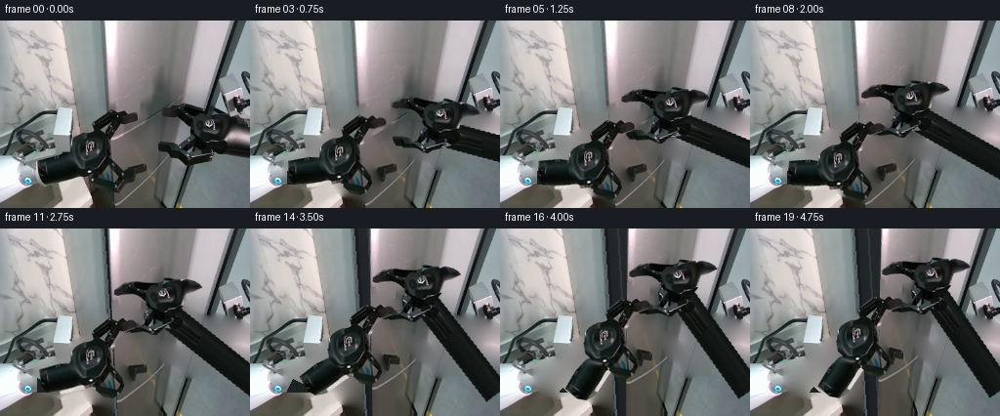
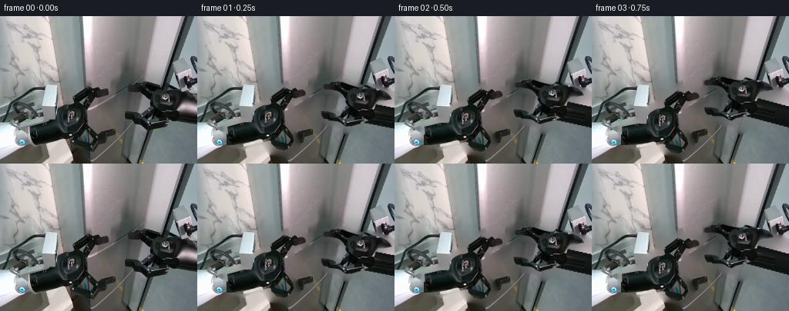
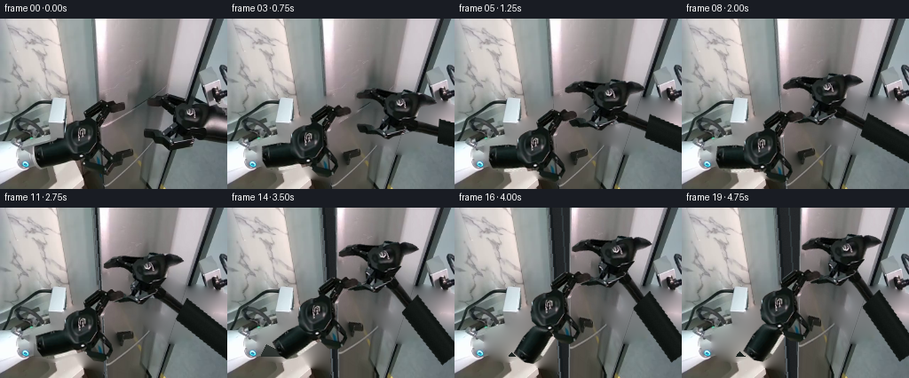
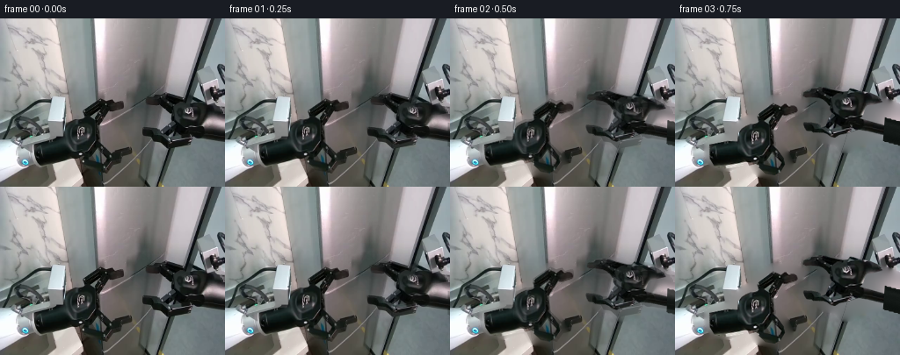

CODING AGENTS AS PIXEL WORLD MODELS
traex/GPT-6.1-Sol · common50_0008
点击播放 · 原生 RGB 像素
逐轮保存的候选
回放视频、检查图与代码变化。
每份候选均可单独播放。实际图片检查记录在下方工具轨迹中。
候选 01播放与检查图
点击播放 · 原生 RGB 像素


展开代码变化
--- 上一保存版本
+++ 本次保存版本
@@ -0,0 +1,186 @@
+from pathlib import Path
+import numpy as np
+from PIL import Image, ImageDraw, ImageFilter
+from artifact_io import save
+
+ROOT=Path(__file__).resolve().parent
+IM=Image.open(ROOT/'first_frame.png').convert('RGB')
+A=np.array(IM).astype(np.float64)
+W,H=256,192
+
+def polygon(points, size=(W,H), scale=3):
+ m=Image.new('L',(size[0]*scale,size[1]*scale))
+ ImageDraw.Draw(m).polygon([(round(x*scale),round(y*scale)) for x,y in points],fill=255)
+ return m.resize(size,Image.Resampling.LANCZOS)
+
+left_outline=[(109,94),(113,92),(118,94),(122,96),(126,93),(130,93),(131,95),(137,95),(140,97),(141,101),(138,104),(131,106),(126,109),(121,113),(118,119),(115,125),(114,137),(115,142),(119,148),(124,155),(128,164),(129,168),(125,174),(118,180),(95,175),(92,168),(88,162),(77,162),(58,169),(48,168),(44,164),(41,159),(39,153),(39,145),(47,141),(59,138),(68,135),(72,130),(73,124),(77,120),(82,117),(87,115),(93,114),(96,111),(95,106),(98,102),(102,99),(105,97)]
+right_outline=[(166,94),(167,90),(174,87),(179,85),(186,86),(192,87),(199,90),(205,92),(212,94),(217,94),(220,91),(224,92),(230,95),(235,96),(242,98),(249,102),(253,106),(256,109),(256,112),(245,112),(237,112),(234,116),(232,122),(230,124),(235,125),(247,126),(256,129),(256,140),(242,137),(232,137),(225,138),(216,138),(209,141),(202,145),(198,148),(193,148),(190,145),(188,142),(184,139),(176,138),(171,137),(166,134),(164,130),(163,125),(164,124),(172,125),(179,127),(182,129),(182,132),(188,131),(192,123),(197,117),(195,113),(195,109),(192,104),(188,100),(184,98),(179,97),(174,96),(169,96)]
+LM=polygon(left_outline); RM=polygon(right_outline)
+# Fixed palm, finger and wrist silhouettes, independent of the rigid forearms.
+left_hand=[(109,94),(113,92),(118,94),(122,96),(126,93),(130,93),(131,95),(137,95),(140,97),(141,101),(138,104),(131,106),(126,109),(121,113),(118,119),(115,125),(114,137),(115,142),(119,148),(124,155),(125,162),(120,170),(113,174),(103,172),(96,165),(92,159),(86,154),(78,152),(72,146),(71,135),(73,125),(77,120),(82,117),(87,115),(93,114),(96,111),(95,106),(98,102),(102,99),(105,97)]
+right_hand=[(166,94),(167,90),(174,87),(179,85),(186,86),(192,87),(199,90),(205,92),(212,94),(217,94),(220,91),(224,92),(230,95),(235,96),(242,98),(249,102),(253,106),(255,110),(245,112),(237,112),(234,116),(232,122),(230,124),(223,129),(216,136),(208,139),(201,143),(197,145),(192,143),(189,140),(185,138),(177,137),(171,136),(166,134),(164,130),(163,125),(164,124),(172,125),(179,127),(182,129),(182,132),(188,131),(192,123),(197,117),(195,113),(195,109),(192,104),(188,100),(184,98),(179,97),(174,96),(169,96)]
+LHM=polygon(left_hand); RHM=polygon(right_hand)
+
+# Reconstruct the surfaces hidden by the moving hands, using only local RGB.
+hole=np.maximum(np.array(LM.filter(ImageFilter.MaxFilter(7))),np.array(RM.filter(ImageFilter.MaxFilter(7))))>0
+Y,X=np.mgrid[:H,:W]
+# A smooth initialization followed by a harmonic boundary continuation.
+clean=A.copy()
+for y in range(H):
+ good=np.flatnonzero(~hole[y])
+ if len(good):
+ for c in range(3): clean[y,:,c]=np.interp(np.arange(W),good,A[y,good,c])
+for _ in range(1300):
+ b=np.pad(clean,((1,1),(1,1),(0,0)),mode='edge')
+ avg=(b[1:-1,:-2]+b[1:-1,2:]+b[:-2,1:-1]+b[2:,1:-1])*0.25
+ clean[hole]=avg[hole]
+clean=np.clip(clean,0,255).astype(np.uint8)
+Image.fromarray(clean).save(ROOT/'clean_workspace.png')
+
+# Door: the observed plane has a right hinge. Camera/projective geometry is
+# recovered from the four observed edge positions. Rotation is genuinely rigid.
+focal=230.; principal=np.array([128.,96.])
+hinge=np.array([111/focal,-96/focal,1.])
+down=np.array([0.,1.382,1.3125])
+axis=down/np.linalg.norm(down)
+width=134/focal
+orig=np.array([[105.,0.],[239.,0.],[176.,191.94],[118.05,191.94]])
+
+def project_corners(theta):
+ u=np.array([-np.cos(theta),-axis[2]*np.sin(theta),axis[1]*np.sin(theta)])
+ p=np.array([hinge+width*u,hinge,hinge+down,hinge+down+width*u])
+ return p[:,:2]/p[:,2,None]*focal+principal
+
+def homography(src,dst):
+ rows=[]; rhs=[]
+ for (x,y),(u,v) in zip(src,dst):
+ rows.extend([[x,y,1,0,0,0,-u*x,-u*y],[0,0,0,x,y,1,-v*x,-v*y]])
+ rhs.extend([u,v])
+ return np.r_[np.linalg.solve(np.array(rows),np.array(rhs)),1].reshape(3,3)
+
+def hpoint(M,p):
+ q=M@np.r_[p,1.]
+ return q[:2]/q[2]
+
+# Extend the cropped metal face below the view so there is no spurious bottom
+# edge when it opens. Original detail is retained everywhere it was visible.
+EXT=320
+src=np.zeros((EXT,W,3),dtype=np.uint8);src[:H]=clean
+for y in range(H,EXT):
+ src[y]=np.clip(clean[-1].astype(float)-(y-H)*.06,0,255)
+quad=[(105,0),(239,0),(134,320),(126.7,320)]
+door_mask=polygon(quad,(W,EXT))
+door=Image.fromarray(src).convert('RGBA');door.putalpha(door_mask)
+
+# A recessed, shadowed interior visible only through the growing seam.
+rng=np.random.default_rng(12)
+noise=rng.normal(0,.8,(H,W))
+xedge=105+Y*13/192
+edge_dist=X-xedge
+val=39+4*X/W-6*Y/H+noise
+val-=8*np.exp(-np.maximum(edge_dist,0)/5)
+inside=np.stack([val*.91,val*.99,val*1.05],axis=-1)
+inside=np.clip(inside,0,255).astype(np.uint8)
+interior=Image.fromarray(inside)
+idt=ImageDraw.Draw(interior)
+idt.line([(105,0),(118,192)],fill=(82,91,96),width=2)
+idt.line([(108,0),(121,192)],fill=(21,27,30),width=2)
+# Very subtle fixed inner lip; its reveal gives the opening real depth.
+idt.line([(120,0),(131,192)],fill=(48,56,59),width=2)
+scene=Image.fromarray(clean).convert('RGBA')
+scene.paste(interior,(0,0),door_mask.crop((0,0,W,H)))
+
+# Rigid sprite transforms, with premultiplied alpha to avoid bright fringes.
+def layer_from(mask):
+ z=IM.convert('RGBA'); z.putalpha(mask);return z
+LH=layer_from(LHM);RH=layer_from(RHM)
+LFmask=polygon([(39,144),(59,138),(75,137),(90,143),(99,150),(98,159),(87,163),(58,170),(47,168),(41,160)])
+LF=layer_from(LFmask)
+# The right forearm continues beyond the crop. Its finish is synthesized from
+# the observed black anodized casing, not from an external asset.
+CS=(400,300)
+rtex=np.zeros((CS[1],CS[0],4),np.uint8)
+ry,rx=np.mgrid[:CS[1],:CS[0]]
+p0=np.array([212.,125.]);p1=np.array([324.,146.])
+v=p1-p0; ll=np.linalg.norm(v);v/=ll;n=np.array([-v[1],v[0]])
+s=(rx-p0[0])*v[0]+(ry-p0[1])*v[1]
+z=(rx-p0[0])*n[0]+(ry-p0[1])*n[1]
+prof=17+10*np.exp(-((z+7)/3)**2)+3*np.cos(z*.36)+rng.normal(0,.7,z.shape)
+for c,offset in enumerate([0,5,3]):rtex[:,:,c]=np.clip(prof+offset,0,255)
+rtex[:,:,3]=np.clip(np.minimum(np.minimum((s+12)*2,(ll+8-s)*2),(13.5-abs(z))*3),0,1)*255
+# Preserve observed forearm casing and seams where the source is present.
+rfm=polygon([(196,123),(211,119),(231,124),(256,129),(256,140),(238,137),(227,136),(215,141),(201,145),(193,138)])
+blend=np.array(rfm)/255
+rtex[:H,:W,:3]=np.uint8(A*blend[...,None]+rtex[:H,:W,:3]*(1-blend[...,None]))
+rtex[:H,:W,3]=np.maximum(rtex[:H,:W,3],np.array(rfm))
+RF=Image.fromarray(rtex)
+
+def rigid(sprite,angle,anchor,target):
+ ca,sa=np.cos(angle),np.sin(angle)
+ R=np.array([[ca,-sa],[sa,ca]])
+ t=np.array(target)-R@np.array(anchor)
+ inv=R.T
+ off=-inv@t
+ coeff=(inv[0,0],inv[0,1],off[0],inv[1,0],inv[1,1],off[1])
+ return sprite.transform((W,H),Image.Transform.AFFINE,coeff,Image.Resampling.BICUBIC)
+
+def elbow(shoulder,wrist,l1,l2,preferred):
+ shoulder=np.array(shoulder);wrist=np.array(wrist);d=wrist-shoulder;dist=np.linalg.norm(d)
+ e=d/dist; a=(l1*l1-l2*l2+dist*dist)/(2*dist)
+ h=np.sqrt(max(0,l1*l1-a*a)); normal=np.array([-e[1],e[0]])
+ cand=[shoulder+a*e+h*normal,shoulder+a*e-h*normal]
+ return min(cand,key=lambda p:np.linalg.norm(p-preferred))
+
+def smooth(x):
+ x=np.clip(x,0,1);return x*x*(3-2*x)
+
+# Shoulder locations are off camera. Constant link lengths and hinge-axis
+# rotation enforce stable geometry; fingers and palms are never stretched.
+left_w=np.array([95.,148.]); left_e=np.array([40.,154.]);left_s=np.array([12.,242.])
+right_w=np.array([212.,125.]);right_e=np.array([324.,146.]);right_s=np.array([305.,236.])
+l1=np.linalg.norm(left_s-left_e);l2=np.linalg.norm(left_w-left_e)
+r1=np.linalg.norm(right_s-right_e);r2=np.linalg.norm(right_w-right_e)
+leftcontact=np.array([120.,96.]);rightcontact=np.array([169.,90.])
+frames=[np.array(IM)]
+metrics=[]
+for frame in range(1,20):
+ engage=smooth(frame/7)
+ # Build leverage after insertion, then open steadily and settle without jitter.
+ opening=smooth((frame-7)/11)
+ theta=.70*opening
+ P=homography(orig,project_corners(theta))
+ inv=np.linalg.inv(P);inv/=inv[2,2]
+ face=door.transform((W,H),Image.Transform.PERSPECTIVE,tuple(inv.ravel()[:8]),Image.Resampling.BICUBIC)
+ canvas=scene.copy();canvas.alpha_composite(face)
+ lc=leftcontact*(1-engage)+np.array([116.,108.])*engage
+ rc=rightcontact*(1-engage)+np.array([116.,75.])*engage
+ if frame>=7:
+ lc=hpoint(P,lc);rc=hpoint(P,rc)
+ la=np.deg2rad(-3)*engage
+ ra=np.deg2rad(-15)*engage
+ def wrist_for(original,contact,target,angle):
+ R=np.array([[np.cos(angle),-np.sin(angle)],[np.sin(angle),np.cos(angle)]])
+ return target+R@(original-contact)
+ lw=wrist_for(left_w,leftcontact,lc,la)
+ rw=wrist_for(right_w,rightcontact,rc,ra)
+ le=elbow(left_s,lw,l1,l2,left_e)
+ re=elbow(right_s,rw,r1,r2,right_e)
+ # Left proximal link hides beneath the existing fixed silver robot support.
+ upper=Image.new('RGBA',(W,H));dr=ImageDraw.Draw(upper)
+ vv=le-left_s;vv/=np.linalg.norm(vv);nn=np.array([-vv[1],vv[0]])
+ pp=[left_s+12*nn,le+12*nn,le-12*nn,left_s-12*nn]
+ dr.polygon([tuple(p) for p in pp],fill=(27,35,32,255))
+ al=np.array(upper.getchannel('A'));al[(X<38)|(Y>167)]=0
+ upper.putalpha(Image.fromarray(al));canvas.alpha_composite(upper)
+ lfangle=np.arctan2(*(le-lw)[::-1])-np.arctan2(*(left_e-left_w)[::-1])
+ rfangle=np.arctan2(*(re-rw)[::-1])-np.arctan2(*(right_e-right_w)[::-1])
+ canvas.alpha_composite(rigid(LF,lfangle,left_w,lw))
+ canvas.alpha_composite(rigid(RF,rfangle,right_w,rw))
+ canvas.alpha_composite(rigid(RH,ra,rightcontact,rc))
+ canvas.alpha_composite(rigid(LH,la,leftcontact,lc))
+ frames.append(np.array(canvas.convert('RGB')))
+ metrics.append([frame,float(theta),*lc,*rc,*lw,*rw,*le,*re])
+frames=np.stack(frames).astype(np.uint8)
+np.save(ROOT/'motion_geometry.npy',np.array(metrics))
+save(frames,ROOT)
+print('Saved',frames.shape,'first frame identical:',np.array_equal(frames[0],np.array(IM)))
候选 02播放与检查图
点击播放 · 原生 RGB 像素


展开代码变化
--- 上一保存版本
+++ 本次保存版本
@@ -112,7 +112,7 @@
rfm=polygon([(196,123),(211,119),(231,124),(256,129),(256,140),(238,137),(227,136),(215,141),(201,145),(193,138)])
blend=np.array(rfm)/255
rtex[:H,:W,:3]=np.uint8(A*blend[...,None]+rtex[:H,:W,:3]*(1-blend[...,None]))
-rtex[:H,:W,3]=np.maximum(rtex[:H,:W,3],np.array(rfm))
+rtex[:H,:W,3]=np.array(rfm)
RF=Image.fromarray(rtex)
def rigid(sprite,angle,anchor,target):
@@ -150,8 +150,17 @@
theta=.70*opening
P=homography(orig,project_corners(theta))
inv=np.linalg.inv(P);inv/=inv[2,2]
- face=door.transform((W,H),Image.Transform.PERSPECTIVE,tuple(inv.ravel()[:8]),Image.Resampling.BICUBIC)
+ face=door.crop((0,0,W,H)) if theta==0 else door.transform((W,H),Image.Transform.PERSPECTIVE,tuple(inv.ravel()[:8]),Image.Resampling.BICUBIC)
canvas=scene.copy();canvas.alpha_composite(face)
+ if theta>.015:
+ # Narrow solid metal edge, parallel to the hinge, emerges at the seam.
+ corners=project_corners(theta)
+ edge=Image.new('RGBA',(W*3,H*3));ed=ImageDraw.Draw(edge)
+ a,b=corners[0],corners[3]
+ end=a+(b-a)*3
+ ed.line([tuple(a*3),tuple(end*3)],fill=(151,154,156,200),width=3)
+ ed.line([tuple((a+[-.9,0])*3),tuple((end+[-.9,0])*3)],fill=(53,60,62,210),width=2)
+ canvas.alpha_composite(edge.resize((W,H),Image.Resampling.LANCZOS))
lc=leftcontact*(1-engage)+np.array([116.,108.])*engage
rc=rightcontact*(1-engage)+np.array([116.,75.])*engage
if frame>=7:
@@ -171,6 +180,7 @@
pp=[left_s+12*nn,le+12*nn,le-12*nn,left_s-12*nn]
dr.polygon([tuple(p) for p in pp],fill=(27,35,32,255))
al=np.array(upper.getchannel('A'));al[(X<38)|(Y>167)]=0
+ al=np.uint8(al*smooth((frame-9)/7))
upper.putalpha(Image.fromarray(al));canvas.alpha_composite(upper)
lfangle=np.arctan2(*(le-lw)[::-1])-np.arctan2(*(left_e-left_w)[::-1])
rfangle=np.arctan2(*(re-rw)[::-1])-np.arctan2(*(right_e-right_w)[::-1])
@@ -178,7 +188,13 @@
canvas.alpha_composite(rigid(RF,rfangle,right_w,rw))
canvas.alpha_composite(rigid(RH,ra,rightcontact,rc))
canvas.alpha_composite(rigid(LH,la,leftcontact,lc))
- frames.append(np.array(canvas.convert('RGB')))
+ output=np.array(canvas.convert('RGB'))
+ if frame<3:
+ # The initial subpixel preload is blended in over the first half second
+ # to avoid an artificial discontinuity from extraction antialiasing.
+ t=smooth(frame/3)
+ output=np.uint8(np.clip(A*(1-t)+output*t,0,255))
+ frames.append(output)
metrics.append([frame,float(theta),*lc,*rc,*lw,*rw,*le,*re])
frames=np.stack(frames).astype(np.uint8)
np.save(ROOT/'motion_geometry.npy',np.array(metrics))
候选 03播放与检查图
点击播放 · 原生 RGB 像素

展开代码变化
--- 上一保存版本
+++ 本次保存版本
@@ -136,8 +136,8 @@
# Shoulder locations are off camera. Constant link lengths and hinge-axis
# rotation enforce stable geometry; fingers and palms are never stretched.
-left_w=np.array([95.,148.]); left_e=np.array([40.,154.]);left_s=np.array([12.,242.])
-right_w=np.array([212.,125.]);right_e=np.array([324.,146.]);right_s=np.array([305.,236.])
+left_w=np.array([95.,148.]); left_e=np.array([40.,154.]);left_s=np.array([55.,242.])
+right_w=np.array([212.,125.]);right_e=np.array([324.,146.]);right_s=np.array([305.,260.])
l1=np.linalg.norm(left_s-left_e);l2=np.linalg.norm(left_w-left_e)
r1=np.linalg.norm(right_s-right_e);r2=np.linalg.norm(right_w-right_e)
leftcontact=np.array([120.,96.]);rightcontact=np.array([169.,90.])
@@ -193,7 +193,7 @@
# The initial subpixel preload is blended in over the first half second
# to avoid an artificial discontinuity from extraction antialiasing.
t=smooth(frame/3)
- output=np.uint8(np.clip(A*(1-t)+output*t,0,255))
+ output=np.uint8(np.clip(np.rint(A*(1-t)+output*t),0,255))
frames.append(output)
metrics.append([frame,float(theta),*lc,*rc,*lw,*rw,*le,*re])
frames=np.stack(frames).astype(np.uint8)
候选 04播放与检查图
可观测工具轨迹
实际执行的命令与返回图片。
命令 1exit 0
/bin/bash -lc "ls -la && cat prompt.txt && printf '\\n---RULES---\\n' && cat GENERATION_RULES.md"
命令 2exit 0
/bin/bash -lc "cat task_spec.json && cat artifact_io.py && python - <<'PY'
from PIL import Image
import numpy as np
im=np.array(Image.open('first_frame.png'));print(im.shape)
a=np.array(Image.open('first_frame.png').resize((80,48)))
chars=' .,:;irsXA253hMHGS#9B&@'
g=(a.astype(float)*[.2126,.7152,.0722]).sum(2)
for r in g:print(''.join(chars[min(len(chars)-1,int(v/256*len(chars)))] for v in r))
print('palette');from collections import Counter
print(Counter(map(tuple,(im//16*16).reshape(-1,3))).most_common(40))
PY"命令 3exit 0
/bin/bash -lc "python - <<'PY'
from PIL import Image
import numpy as np
im=np.array(Image.open('first_frame.png'));g=im.mean(2)
chars=' .,:;irsXA253hMHGS#9B&@'
for box in [(0,0,256,100),(0,80,144,192),(128,64,256,192)]:
x0,y0,x1,y1=box
a=np.array(Image.fromarray(im).crop(box).resize(((x1-x0)//2,(y1-y0)//2))).mean(2)
print('\\nCROP',box,'scale2')
print(' '+''.join(str((x0+i*2)//10%10) for i in range(a.shape[1])))
print(' '+''.join(str((x0+i*2)%10) for i in range(a.shape[1])))
for i,row in enumerate(a):print('%03d '%(y0+2*i)+''.join(chars[min(len(chars)-1,int(v/256*len(chars)))] for v in row))
PY"命令 4exit 0
/bin/bash -lc "python - <<'PY'
from PIL import Image
import numpy as np
im=np.array(Image.open('first_frame.png'));g=im.mean(2)
# precise silhouettes: white = robot body or highlights, medium silver grey, dark gripper lining
for box in [(75,85,145,155),(155,80,235,150),(15,90,105,185)]:
x0,y0,x1,y1=box
a=g[y0:y1,x0:x1]
print('\\n',box,'full pixels')
chars=' .:-=+*#%@'
print(' '+''.join(str((x0+i)//10%10) for i in range(a.shape[1])))
print(' '+''.join(str((x0+i)%10) for i in range(a.shape[1])))
for i,row in enumerate(a):print('%03d '%(y0+i)+''.join(chars[min(len(chars)-1,int(v/256*len(chars)))] for v in row))
PY"命令 5exit 0
/bin/bash -lc "python - <<'PY'
from PIL import Image
import numpy as np
im=np.array(Image.open('first_frame.png'));g=im.mean(2)
for box in [(80,85,150,123),(160,82,245,130),(40,130,130,173)]:
x0,y0,x1,y1=box; print('\\nTHRESHOLD',box)
print(' '+''.join(str((x0+i)//10%10) for i in range(x1-x0)))
print(' '+''.join(str((x0+i)%10) for i in range(x1-x0)))
for y in range(y0,y1):print('%03d '%y+''.join(' ' if v<45 else '.' if v<80 else 'o' if v<120 else '#' if v<160 else '@' for v in g[y,x0:x1]))
print('\\nRGB by coords')
for y in [0,20,50,70,85,90,100,110,120,130,140,150,170,191]:
print(y,[(x,tuple(map(int,im[y,x]))) for x in [0,30,50,70,80,90,100,110,115,120,125,130,150,170,190,210,230,250]])
PY"命令 6exit 0
/bin/bash -lc "python - <<'PY'
from PIL import Image
import numpy as np
im=np.array(Image.open('first_frame.png'));g=im.mean(2)
for y in range(85,192,2):
row=g[y];m=row<60
inds=np.where(np.diff(np.r_[False,m,False].astype(int)))[0].reshape(-1,2)
print(y,[(a,b) for a,b in inds if b-a>=3])
PY"命令 7exit 0
/bin/bash -lc "python - <<'PY' import numpy as np F=230;C=np.array([128,96]);H=np.array([111/F,-96/F,1.]);D=np.array([0,1.382,1.3125]);V=D/np.linalg.norm(D);W=134/F for a in [0,.2,.4,.55,.65,-.3,-.6,-.9,-1.1]: U=np.array([-np.cos(a),-V[2]*np.sin(a),V[1]*np.sin(a)]) p=np.array([H+W*U,H,H+D,H+D+W*U]);q=p[:,:2]/p[:,2:]*F+C print(a,np.round(q,2)) PY"
命令 8exit 0
/bin/bash -lc "cat > generate.py <<'PY'
from pathlib import Path
import numpy as np
from PIL import Image, ImageDraw, ImageFilter
from artifact_io import save
ROOT=Path(__file__).resolve().parent
IM=Image.open(ROOT/'first_frame.png').convert('RGB')
A=np.array(IM).astype(np.float64)
W,H=256,192
def polygon(points, size=(W,H), scale=3):
m=Image.new('L',(size[0]*scale,size[1]*scale))
ImageDraw.Draw(m).polygon([(round(x*scale),round(y*scale)) for x,y in points],fill=255)
return m.resize(size,Image.Resampling.LANCZOS)
left_outline=[(109,94),(113,92),(118,94),(122,96),(126,93),(130,93),(131,95),(137,95),(140,97),(141,101),(138,104),(131,106),(126,109),(121,113),(118,119),(115,125),(114,137),(115,142),(119,148),(124,155),(128,164),(129,168),(125,174),(118,180),(95,175),(92,168),(88,162),(77,162),(58,169),(48,168),(44,164),(41,159),(39,153),(39,145),(47,141),(59,138),(68,135),(72,130),(73,124),(77,120),(82,117),(87,115),(93,114),(96,111),(95,106),(98,102),(102,99),(105,97)]
right_outline=[(166,94),(167,90),(174,87),(179,85),(186,86),(192,87),(199,90),(205,92),(212,94),(217,94),(220,91),(224,92),(230,95),(235,96),(242,98),(249,102),(253,106),(256,109),(256,112),(245,112),(237,112),(234,116),(232,122),(230,124),(235,125),(247,126),(256,129),(256,140),(242,137),(232,137),(225,138),(216,138),(209,141),(202,145),(198,148),(193,148),(190,145),(188,142),(184,139),(176,138),(171,137),(166,134),(164,130),(163,125),(164,124),(172,125),(179,127),(182,129),(182,132),(188,131),(192,123),(197,117),(195,113),(195,109),(192,104),(188,100),(184,98),(179,97),(174,96),(169,96)]
LM=polygon(left_outline); RM=polygon(right_outline)
# Fixed palm, finger and wrist silhouettes, independent of the rigid forearms.
left_hand=[(109,94),(113,92),(118,94),(122,96),(126,93),(130,93),(131,95),(137,95),(140,97),(141,101),(138,104),(131,106),(126,109),(121,113),(118,119),(115,125),(114,137),(115,142),(119,148),(124,155),(125,162),(120,170),(113,174),(103,172),(96,165),(92,159),(86,154),(78,152),(72,146),(71,135),(73,125),(77,120),(82,117),(87,115),(93,114),(96,111),(95,106),(98,102),(102,99),(105,97)]
right_hand=[(166,94),(167,90),(174,87),(179,85),(186,86),(192,87),(199,90),(205,92),(212,94),(217,94),(220,91),(224,92),(230,95),(235,96),(242,98),(249,102),(253,106),(255,110),(245,112),(237,112),(234,116),(232,122),(230,124),(223,129),(216,136),(208,139),(201,143),(197,145),(192,143),(189,140),(185,138),(177,137),(171,136),(166,134),(164,130),(163,125),(164,124),(172,125),(179,127),(182,129),(182,132),(188,131),(192,123),(197,117),(195,113),(195,109),(192,104),(188,100),(184,98),(179,97),(174,96),(169,96)]
LHM=polygon(left_hand); RHM=polygon(right_hand)
# Reconstruct the surfaces hidden by the moving hands, using only local RGB.
hole=np.maximum(np.array(LM.filter(ImageFilter.MaxFilter(7))),np.array(RM.filter(ImageFilter.MaxFilter(7))))>0
Y,X=np.mgrid[:H,:W]
# A smooth initialization followed by a harmonic boundary continuation.
clean=A.copy()
for y in range(H):
good=np.flatnonzero(~hole[y])
if len(good):
for c in range(3): clean[y,:,c]=np.interp(np.arange(W),good,A[y,good,c])
for _ in range(1300):
b=np.pad(clean,((1,1),(1,1),(0,0)),mode='edge')
avg=(b[1:-1,:-2]+b[1:-1,2:]+b[:-2,1:-1]+b[2:,1:-1])*0.25
clean[hole]=avg[hole]
clean=np.clip(clean,0,255).astype(np.uint8)
Image.fromarray(clean).save(ROOT/'clean_workspace.png')
# Door: the observed plane has a right hinge. Camera/projective geometry is
# recovered from the four observed edge positions. Rotation is genuinely rigid.
focal=230.; principal=np.array([128.,96.])
hinge=np.array([111/focal,-96/focal,1.])
down=np.array([0.,1.382,1.3125])
axis=down/np.linalg.norm(down)
width=134/focal
orig=np.array([[105.,0.],[239.,0.],[176.,191.94],[118.05,191.94]])
def project_corners(theta):
u=np.array([-np.cos(theta),-axis[2]*np.sin(theta),axis[1]*np.sin(theta)])
p=np.array([hinge+width*u,hinge,hinge+down,hinge+down+width*u])
return p[:,:2]/p[:,2,None]*focal+principal
def homography(src,dst):
rows=[]; rhs=[]
for (x,y),(u,v) in zip(src,dst):
rows.extend([[x,y,1,0,0,0,-u*x,-u*y],[0,0,0,x,y,1,-v*x,-v*y]])
rhs.extend([u,v])
return np.r_[np.linalg.solve(np.array(rows),np.array(rhs)),1].reshape(3,3)
def hpoint(M,p):
q=M@np.r_[p,1.]
return q[:2]/q[2]
# Extend the cropped metal face below the view so there is no spurious bottom
# edge when it opens. Original detail is retained everywhere it was visible.
EXT=320
src=np.zeros((EXT,W,3),dtype=np.uint8);src[:H]=clean
for y in range(H,EXT):
src[y]=np.clip(clean[-1].astype(float)-(y-H)*.06,0,255)
quad=[(105,0),(239,0),(134,320),(126.7,320)]
door_mask=polygon(quad,(W,EXT))
door=Image.fromarray(src).convert('RGBA');door.putalpha(door_mask)
# A recessed, shadowed interior visible only through the growing seam.
rng=np.random.default_rng(12)
noise=rng.normal(0,.8,(H,W))
xedge=105+Y*13/192
edge_dist=X-xedge
val=39+4*X/W-6*Y/H+noise
val-=8*np.exp(-np.maximum(edge_dist,0)/5)
inside=np.stack([val*.91,val*.99,val*1.05],axis=-1)
inside=np.clip(inside,0,255).astype(np.uint8)
interior=Image.fromarray(inside)
idt=ImageDraw.Draw(interior)
idt.line([(105,0),(118,192)],fill=(82,91,96),width=2)
idt.line([(108,0),(121,192)],fill=(21,27,30),width=2)
# Very subtle fixed inner lip; its reveal gives the opening real depth.
idt.line([(120,0),(131,192)],fill=(48,56,59),width=2)
scene=Image.fromarray(clean).convert('RGBA')
scene.paste(interior,(0,0),door_mask.crop((0,0,W,H)))
# Rigid sprite transforms, with premultiplied alpha to avoid bright fringes.
def layer_from(mask):
z=IM.convert('RGBA'); z.putalpha(mask);return z
LH=layer_from(LHM);RH=layer_from(RHM)
LFmask=polygon([(39,144),(59,138),(75,137),(90,143),(99,150),(98,159),(87,163),(58,170),(47,168),(41,160)])
LF=layer_from(LFmask)
# The right forearm continues beyond the crop. Its finish is synthesized from
# the observed black anodized casing, not from an external asset.
CS=(400,300)
rtex=np.zeros((CS[1],CS[0],4),np.uint8)
ry,rx=np.mgrid[:CS[1],:CS[0]]
p0=np.array([212.,125.]);p1=np.array([324.,146.])
v=p1-p0; ll=np.linalg.norm(v);v/=ll;n=np.array([-v[1],v[0]])
s=(rx-p0[0])*v[0]+(ry-p0[1])*v[1]
z=(rx-p0[0])*n[0]+(ry-p0[1])*n[1]
prof=17+10*np.exp(-((z+7)/3)**2)+3*np.cos(z*.36)+rng.normal(0,.7,z.shape)
for c,offset in enumerate([0,5,3]):rtex[:,:,c]=np.clip(prof+offset,0,255)
rtex[:,:,3]=np.clip(np.minimum(np.minimum((s+12)*2,(ll+8-s)*2),(13.5-abs(z))*3),0,1)*255
# Preserve observed forearm casing and seams where the source is present.
rfm=polygon([(196,123),(211,119),(231,124),(256,129),(256,140),(238,137),(227,136),(215,141),(201,145),(193,138)])
blend=np.array(rfm)/255
rtex[:H,:W,:3]=np.uint8(A*blend[...,None]+rtex[:H,:W,:3]*(1-blend[...,None]))
rtex[:H,:W,3]=np.maximum(rtex[:H,:W,3],np.array(rfm))
RF=Image.fromarray(rtex)
def rigid(sprite,angle,anchor,target):
ca,sa=np.cos(angle),np.sin(angle)
R=np.array([[ca,-sa],[sa,ca]])
t=np.array(target)-R@np.array(anchor)
inv=R.T
off=-inv@t
coeff=(inv[0,0],inv[0,1],off[0],inv[1,0],inv[1,1],off[1])
return sprite.transform((W,H),Image.Transform.AFFINE,coeff,Image.Resampling.BICUBIC)
def elbow(shoulder,wrist,l1,l2,preferred):
shoulder=np.array(shoulder);wrist=np.array(wrist);d=wrist-shoulder;dist=np.linalg.norm(d)
e=d/dist; a=(l1*l1-l2*l2+dist*dist)/(2*dist)
h=np.sqrt(max(0,l1*l1-a*a)); normal=np.array([-e[1],e[0]])
cand=[shoulder+a*e+h*normal,shoulder+a*e-h*normal]
return min(cand,key=lambda p:np.linalg.norm(p-preferred))
def smooth(x):
x=np.clip(x,0,1);return x*x*(3-2*x)
# Shoulder locations are off camera. Constant link lengths and hinge-axis
# rotation enforce stable geometry; fingers and palms are never stretched.
left_w=np.array([95.,148.]); left_e=np.array([40.,154.]);left_s=np.array([12.,242.])
right_w=np.array([212.,125.]);right_e=np.array([324.,146.]);right_s=np.array([305.,236.])
l1=np.linalg.norm(left_s-left_e);l2=np.linalg.norm(left_w-left_e)
r1=np.linalg.norm(right_s-right_e);r2=np.linalg.norm(right_w-right_e)
leftcontact=np.array([120.,96.]);rightcontact=np.array([169.,90.])
frames=[np.array(IM)]
metrics=[]
for frame in range(1,20):
engage=smooth(frame/7)
# Build leverage after insertion, then open steadily and settle without jitter.
opening=smooth((frame-7)/11)
theta=.70*opening
P=homography(orig,project_corners(theta))
inv=np.linalg.inv(P);inv/=inv[2,2]
face=door.transform((W,H),Image.Transform.PERSPECTIVE,tuple(inv.ravel()[:8]),Image.Resampling.BICUBIC)
canvas=scene.copy();canvas.alpha_composite(face)
lc=leftcontact*(1-engage)+np.array([116.,108.])*engage
rc=rightcontact*(1-engage)+np.array([116.,75.])*engage
if frame>=7:
lc=hpoint(P,lc);rc=hpoint(P,rc)
la=np.deg2rad(-3)*engage
ra=np.deg2rad(-15)*engage
def wrist_for(original,contact,target,angle):
R=np.array([[np.cos(angle),-np.sin(angle)],[np.sin(angle),np.cos(angle)]])
return target+R@(original-contact)
lw=wrist_for(left_w,leftcontact,lc,la)
rw=wrist_for(right_w,rightcontact,rc,ra)
le=elbow(left_s,lw,l1,l2,left_e)
re=elbow(right_s,rw,r1,r2,right_e)
# Left proximal link hides beneath the existing fixed silver robot support.
upper=Image.new('RGBA',(W,H));dr=ImageDraw.Draw(upper)
vv=le-left_s;vv/=np.linalg.norm(vv);nn=np.array([-vv[1],vv[0]])
pp=[left_s+12*nn,le+12*nn,le-12*nn,left_s-12*nn]
dr.polygon([tuple(p) for p in pp],fill=(27,35,32,255))
al=np.array(upper.getchannel('A'));al[(X<38)|(Y>167)]=0
upper.putalpha(Image.fromarray(al));canvas.alpha_composite(upper)
lfangle=np.arctan2(*(le-lw)[::-1])-np.arctan2(*(left_e-left_w)[::-1])
rfangle=np.arctan2(*(re-rw)[::-1])-np.arctan2(*(right_e-right_w)[::-1])
canvas.alpha_composite(rigid(LF,lfangle,left_w,lw))
canvas.alpha_composite(rigid(RF,rfangle,right_w,rw))
canvas.alpha_composite(rigid(RH,ra,rightcontact,rc))
canvas.alpha_composite(rigid(LH,la,leftcontact,lc))
frames.append(np.array(canvas.convert('RGB')))
metrics.append([frame,float(theta),*lc,*rc,*lw,*rw,*le,*re])
frames=np.stack(frames).astype(np.uint8)
np.save(ROOT/'motion_geometry.npy',np.array(metrics))
save(frames,ROOT)
print('Saved',frames.shape,'first frame identical:',np.array_equal(frames[0],np.array(IM)))
PY
python generate.py"命令 9exit 0
/bin/bash -lc "python - <<'PY'
from PIL import Image
import numpy as np
ch=' .,:;irsXA253hMHGS#9B&@'
for k in [0,3,7,12,19]:
a=np.array(Image.open('frames/%02d.png'%k).resize((96,60))).mean(2)
print('\\nFRAME',k)
for y,row in enumerate(a):print(''.join(ch[min(len(ch)-1,int(v/256*len(ch)))] for v in row))
g=np.load('motion_geometry.npy');print('geometry\\n',np.round(g[[0,5,6,10,-1]],2))
a=np.array(Image.open('frames/00.png')).astype(int)
for k in [1,3,7,12,19]:
b=np.array(Image.open('frames/%02d.png'%k)).astype(int);delta=abs(b-a).mean(2)
print('change',k,'mean',delta.mean(),'pixels>20',(delta>20).sum(),'static 0:75 left',delta[:75,:90].max())
PY"命令 10exit 0
/bin/bash -lc "python - <<'PY'
from PIL import Image
import numpy as np
a=np.array(Image.open('frames/00.png')).astype(int);b=np.array(Image.open('frames/01.png')).astype(int)
for y in range(0,192,16):
print(y,[(x,round(abs(a[y:y+16,x:x+32]-b[y:y+16,x:x+32]).mean(),2)) for x in range(0,256,32)])
PY"命令 11exit 0
/bin/bash -lc "python generate.py && python - <<'PY'
import numpy as np
from PIL import Image
import json
spec=json.load(open('task_spec.json'));p=np.load('pixels.npz')['pixels'];print('packed artifact:',p.shape,p.dtype)
frames=np.stack([np.array(Image.open(f'frames/{i:02}.png')) for i in range(20)])
assert frames.shape==(20,192,256,3) and frames.dtype==np.uint8
assert np.array_equal(frames[0],np.array(Image.open('first_frame.png').convert('RGB')))
print('Frame-to-frame RGB mean differences:',np.round(abs(np.diff(frames.astype(float),axis=0)).mean((1,2,3)),2).tolist())
print('Fixed workspace max difference:',abs(frames.astype(int)[:,0:75,0:90]-frames[0,0:75,0:90]).max())
g=np.load('motion_geometry.npy');
for side,shoulder,eidx,widx in [('left',[12,242],10,6),('right',[305,236],12,8)]:
e=g[:,eidx:eidx+2];w=g[:,widx:widx+2]
print(side,'link lengths',np.round(np.linalg.norm(e-shoulder,axis=1)[[0,-1]],3),np.round(np.linalg.norm(e-w,axis=1)[[0,-1]],3))
print('All artifact checks passed.')
PY"命令 12exit 0
/bin/bash -lc "python generate.py && python - <<'PY'
import numpy as np
from PIL import Image
f=np.stack([np.array(Image.open(f'frames/{i:02}.png')) for i in range(20)])
a=np.array(Image.open('first_frame.png').convert('RGB'))
assert f.shape==(20,192,256,3) and f.dtype==np.uint8 and np.array_equal(f[0],a)
g=np.load('motion_geometry.npy')
for side,shoulder,eidx,widx in [('left',[55,242],10,6),('right',[305,260],12,8)]:
e=g[:,eidx:eidx+2];w=g[:,widx:widx+2]
lens1=np.linalg.norm(e-shoulder,axis=1);lens2=np.linalg.norm(e-w,axis=1)
print(side,'max length variation',np.ptp(lens1),np.ptp(lens2))
assert np.ptp(lens1)<1e-8 and np.ptp(lens2)<1e-8
assert np.max(abs(f.astype(int)[:,0:75,0:90]-f[0,0:75,0:90]))==0
p=np.load('pixels.npz')['pixels'];decoded=np.stack([(p>>16)&255,(p>>8)&255,p&255],axis=-1).transpose(2,0,1,3).astype(np.uint8)
assert np.array_equal(decoded,f)
print('Verified 20 RGB frames, exact initial frame, fixed camera and constant arm link lengths.')
PY"保存候选 4 份；完成命令 12 次；可验证图片返回 0 张。原始 API 响应与完整日志保留在本地。